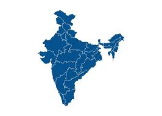

"A brief introduction to the rich heritage of India"
India has one of the oldest civilizations in the world, dating back more than 5,000 years. The country’s history is a blend of ancient kingdoms, cultural evolution, scientific advancements, and diverse traditions. From the Indus Valley Civilization (circa 3300–1300 BCE), with its advanced urban centers and trade.

The Mauryan Empire under Ashoka (circa 321–185 BCE) promoted non-violence and Buddhism, while the Gupta "Golden Age" (circa 320–550 CE) advanced mathematics (zero), astronomy, literature, and art. Invasions by Greeks, Kushans, and Mughals fostered cultural blends, including the Taj Mahal. British rule (1757–1947) introduced railways but sparked Gandhi's non-violent independence movement. Post-1947, India became a secular democracy, overcoming partition, embracing economic reforms, and celebrating its diverse languages, religions, and global contributions in science and culture.•click the following link for more knowledge about Mauryan empire: Learn about the Mauryan Empire
1. Ancient India: Known for the great Indus Valley Civilization, Ancient India laid the foundation of urban planning, trade, and early culture. This period also includes the Vedic age, where sacred texts like the Vedas were composed, shaping philosophical and spiritual traditions. It was during this era that major religions such as Hinduism, Buddhism, and Jainism emerged, each influencing society, art, architecture, and daily life. Ancient India was also marked by advancements in mathematics, astronomy, medicine, and literature, making it one of the world’s earliest centers of knowledge.
Click here for more info about ANCIENT INDIA.2. Medieval India: This era saw the rise and fall of powerful kingdoms and empires, beginning with regional dynasties and later the establishment of major powers like the Delhi Sultanate and the Mughal Empire. Medieval India was a vibrant period of cultural fusion, where Persian, Central Asian, and Indian traditions blended together. This age witnessed the creation of iconic architectural wonders, flourishing trade routes, and the development of new art forms, literature, and music. It was also a time of social and political transitions that shaped India’s identity for centuries.
Click here for more info about MEDIEVAL INDIA.3. Modern India: Marked by the arrival of European powers, especially the British, this era brought significant political, economic, and social changes. British colonial rule influenced education, administration, railways, and legal systems, while also causing economic hardship and cultural shifts. The struggle for independence united millions as leaders like Mahatma Gandhi, Jawaharlal Nehru, and Subhas Chandra Bose inspired movements for freedom. After 1947, India embarked on a journey of nation-building, democratic governance, scientific progress, and modernization, shaping the vibrant and diverse country we see today.
Click here for more info about MODERN INDIA.4. Contemporary India: After economic liberalization in the 1990s, India entered a phase of rapid growth and transformation. This era is marked by advancements in technology, science, space research, and global diplomacy. India has become one of the world's largest economies, with major progress in infrastructure, digital services, and entrepreneurship. Social changes, modernization, and cultural diversity continue to shape everyday life. Despite challenges such as urbanization, environmental concerns, and inequality, contemporary India reflects a dynamic, forward-moving nation striving for innovation, inclusivity, and global leadership.
Click here for more info about CONTEMPORARY INDIA.